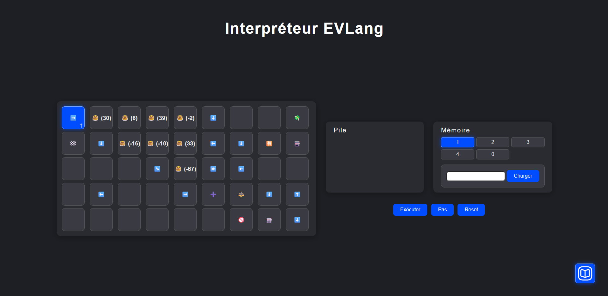
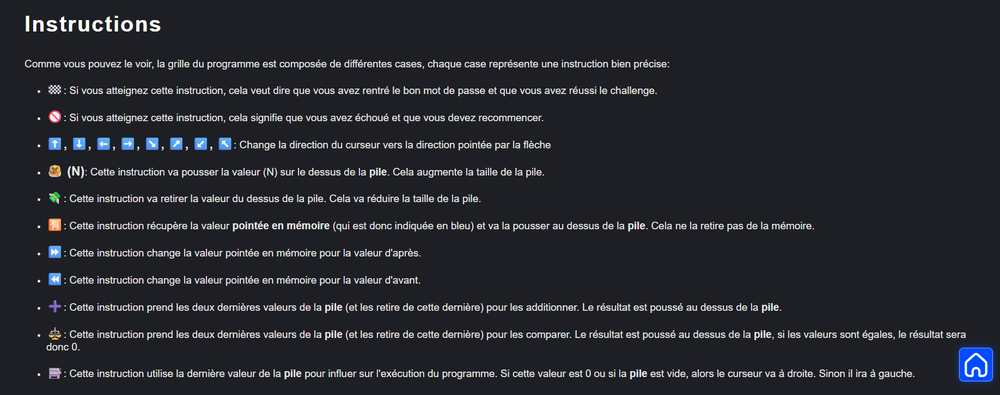
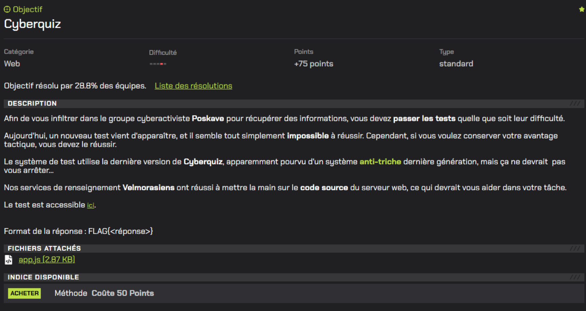
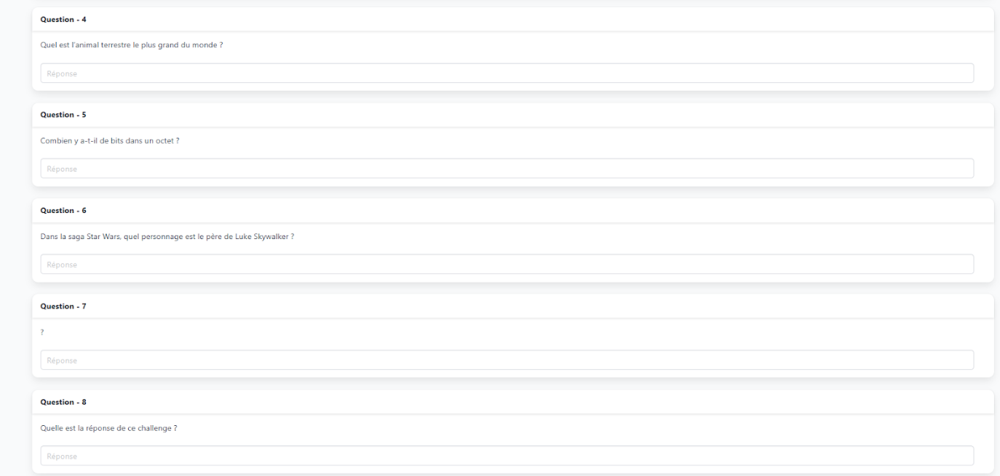
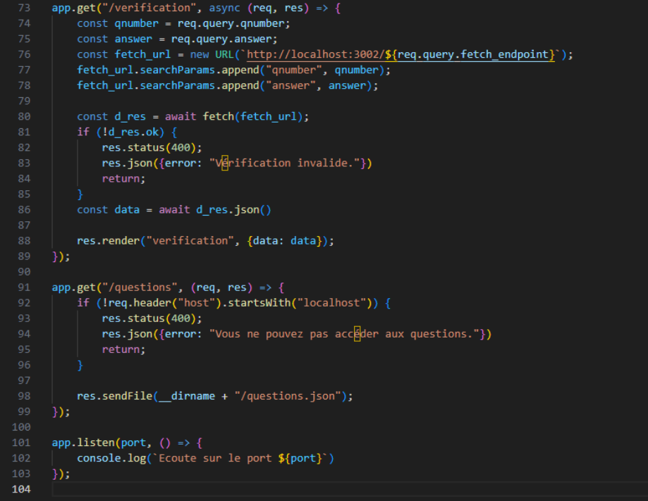
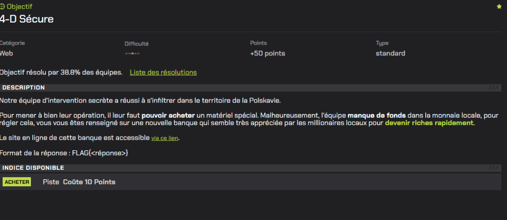
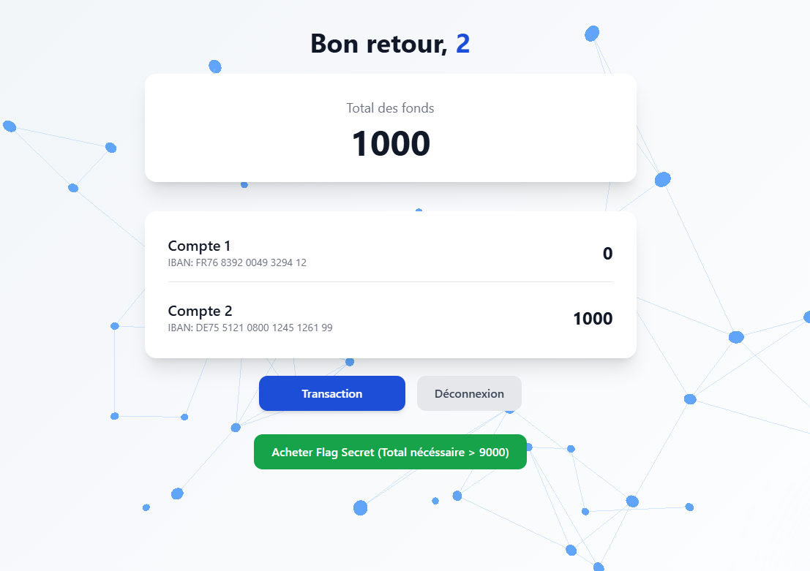
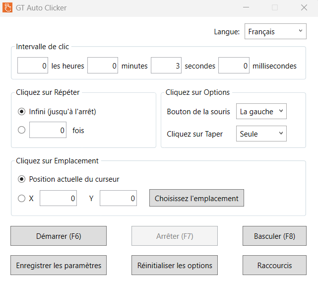

Somaire
Portfolio Merlin Gohier
PROBLÉMATIQUE 1 - Comment on décrypte une suite de nombre en ascii ?
Description du challenge
En analysant un système de données, vous vous êtes rendu compte que la Polskavie est en train de développer un tout nouveau système en deux dimensions: EVLang. Ce système rend tous nos outils d'analyse classique inutiles. Afin de conserver notre avantage stratégique, vous devez analyser le programme présent pour trouver le mot de passe à charger en mémoire permettant d'accéder au drapeau. On vous fournit un interpréteur et une documentation. Format de la réponse : FLAG{réponse}
Étapes de résolution :
Dans un premier temps, on observe le programme fourni dans l'interpréteur EVLang. On remarque que les instructions sont codées en ASCII.

https://www.passetonhack.fr/api/storage/challenges/ddf07581-623e-4a82-a8f0-304905427f29/En analysant les instructions, on remarque que les nombres sont convertis en caractères ASCII, que l'on va ajouter dans une pile se modifiant selon l'élément rencontré ci-dessous.

https://www.passetonhack.fr/api/storage/challenges/ddf07581-623e-4a82-a8f0-304905427f29/doc.htmlPour cela j' ai utilisé un convertisseur pour décoder les nombres en caractères ASCII (https://www.ascii-code.com/fr).
En décodant les nombres, on obtient le FLAG.
Mes difficultés recontrée :
La principale difficulté que j'ai rencontrée était de comprendre comment les instructions étaient codées en ASCII et comment les convertir pour obtenir le mot de passe. Cependant, en utilisant un convertisseur en ligne, j'ai pu surmonter cette difficulté et trouver le FLAG.
ce que j' ai appris :
Pour le grand oral
Je peux présenter ma démarche de résolution du challenge, en expliquant comment j'ai décodé les nombres en ASCII et comment j'ai trouvé le FLAG.
PROBLÉMATIQUE 2 - En quoi la possession d'un back end d’un site web permet de rapidement trouver un faille dans le site web ?
Description du challenge

image issue du site, passe ton hack
Étapes de résolution :
Tout d'abord, analyser le site fourni

J'ai tout d'abord analysé le backend fourni et j'ai remarqué qu'il y avait un problème dans la vérification où nous pouvons faire passer une requête par l'URL

Puis j'ai essayé de trouver la bonne requête, puis je me suis aidé de ChatGPT pour corriger mes erreurs en me les expliquant. Ensuite, j'ai réussi à trouver les réponses à toutes les questions et donc le flague (j'ai perdu la requete).
Mes difficultés recontrée :
j' ai eu du mal à comprendre comment les requêtes fonctionnaient dans le backend, et j'ai eu du mal à trouver la bonne syntaxe pour accéder aux réponses.
ce que j' ai appris :
Pour le grand oral
Je peux mettre en rapport la resolution du challenge avec les notions de sécurité informatique, notamment la manipulation des requêtes HTTP et l'identification des failles dans les systèmes backend.
PROBLÉMATIQUE 3 - Comment une faille dans un site peut détruire un système mis en place ?
Description du challenge

image issue du site, passe ton hack
Étapes de résolution :
Dans un premier temps, de faire une transaction et j'ai remarqué qu'ils avaient plusieurs étapes dans une transaction. Je me suis dit si je fais plusieurs transactions et là j'ai remarqué que si j'étais assez rapide sans attendre la fin de la transaction, je peux dupliquer de l'argent.

https://www.passetonhack.fr/a20960f4-9d66-4096-bdf3-354b2e9795e1/dashboard.htmlDonc j'ai utilisé un autoclicker pour voir et j'ai eu assez d'argent pour acheter le flag.

logiciel : GT Auto Clicker
Mes difficultés recontrée :
J'ai eu du mal à comprendre comment fonctionnait le système de transactions et comment les autoclickers pouvaient être utilisés pour dupliquer de l'argent.
ce que j' ai appris :
Pour le grand oral
Je peux mettre en rapport la resolution du challenge avec les notions de cyber sécurité